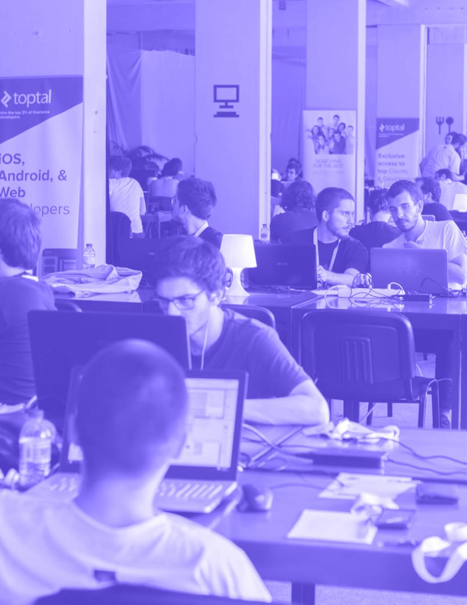
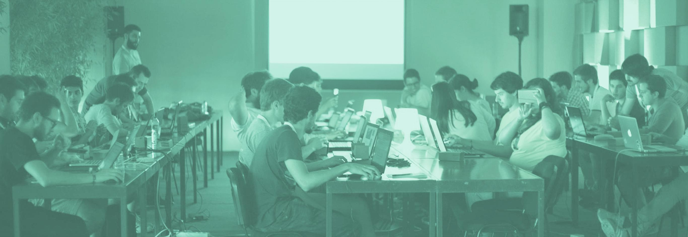

September 8th - 10th, 2017
Create, code, and
learn with us in Porto
Join us in the playground of the future for 3 days
Registration is open until September 2nd<> hackathon
A different kind of hackathon
Make or Break is 3 days of fun and learning, for everyone.
Step out of your comfort zone and join us and many other developers.
The competition has 2 main phases:
- Make: 2 days to develop a software project (maybe add some hardware 🤓)
- Break: showcase your project to all participants in a small fair
We've got everything you need to get your creative juices flowing: amazing mentors, yummy food, and a kickass chill-out zone!
Please check the regulation before applying.

// workshops
Learn from the best while having fun
Make or Break is all about learning different subjects, from hardware to software, from recreational to serious.
Prepare yourself for 3 days of workshops with amazing people working in the industry.
- FRIDAY 8TH — 14:30 My First Game with Unity3D with: João Jacob >
- FRIDAY 8TH — 17:30 Introduction to 3D Printing and Parametric Design with: Rui Teixeira >
- SATURDAY 9TH — 10:30 Introduction to the Arduino ecosystem and the Internet of Things with: Mário Carneiro and João Gradim >
- SATURDAY 9TH — 14:30 A Server From Scratch — A DevOps Primer with: João Anes >
- SATURDAY 9TH — 17:30 Should Coders Design? with: Paulo Pereira >
- SUNDAY 10TH — 10:30 Hitchhiker’s Guide to Hardware Maintenance with: Hélder Silva >

{} schedule
It's a non-stop 3-day marathon!
Day 1 - September 8th
Welcome, work, and workshops
- 09:00-12:00
Check-In
Welcome kits
- 14:30
My First Game with Unity3D
Workshop
- 17:30
Introduction to 3D Printing and Parametric Design
Workshop
Day 2 - September 9th
Work and workshops all day
- 10:30
Introduction to the Arduino ecosystem and the Internet of Things
Workshop
- 14:30
A Server From Scratch — A DevOps Primer
Workshop
- 17:30
Should Coders Design?
Workshop
Day 3 - September 10th
Final work stretch and hack fair
- 10:30
Hitchhiker’s Guide to Hardware Maintenance
Workshop
- 15:30
Hack Fair
Showcase of developed projects
Join us while registration is open until September 2nd!
At Palácio dos Correios, on September 8, 9, and 10
[+] prizes
Amazing prizes for the best projects
Make sure your project shines in at least one of our 3
categories: funny, useful, or hardcore!
We will award 3 different teams (one per category) and each
member will get a prize.
Don't forget to read our rulebook.